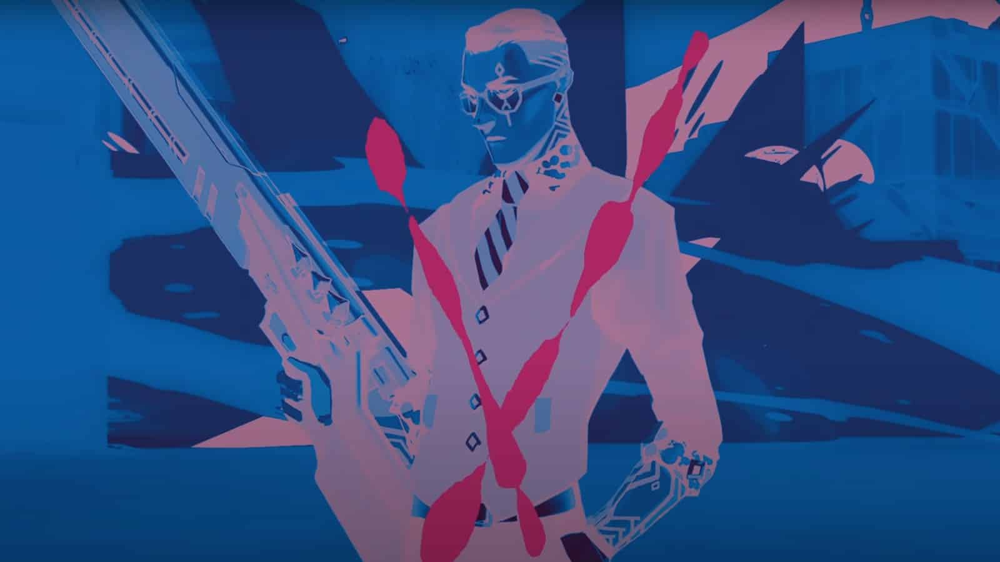

Everything we know about Deadeye, VALORANT’s potential next agent
All clues point towards codename Deadeye being VALORANT’s next agent.
The next agent joining the game will be another Sentinel that “focuses on mechanical outplays,” with an “additional focus on gunplay” for “an extra flourish,” according to a post by Riot on Sept. 27.
Riot hasn’t outright said who VALORANT’s next agent will be, but the devs have left a trail of breadcrumbs in the form of videos, images, and text.
The name “Deadeye” was first discovered in VALORANT’s Year One Anthem video in June, with the word Deadeye scrawled on the side of a gun. The name was later found littered throughout the game’s files and has continued to crop up in trailers, teasers, and other forms of media.
A player title tied to Sova also shares the name Deadeye, another possible connection to the agent.
A mysterious French voice can be heard in a teaser for Fracture—VALORANT’s latest map. It’s speculated that Deadeye is the narrator of the video, which was posted on Sept. 1. “Incredible that something so small can create such an opportunity,” he says. “Their efforts were noble, but sacrifices must be made. Such a pity.”
This would make Deadeye the first French agent in VALORANT, joining a multilingual cast of characters. But the agent could hail from any number of French-speaking countries, of course.
References to Vincent Fabron, a distinctly French-sounding name, can be heard in a security announcement on Fracture. “Warning! Vincent Fabron is no longer permitted on facility grounds. Any persons resembling Fabron must be reported, it says.”
Vincent Fabron could be Deadeye’s real name.
Several images of a mysterious figure have also been found, the first of which appeared in the Year One Anthem video. Holding a large rifle, the agent has slicked-back hair, glasses, a waistcoat, and a tie, giving off a smart and professional look.
Deadeye—if that is his name—will likely make a more permanent appearance when Episode Three, Act Three goes live in November.